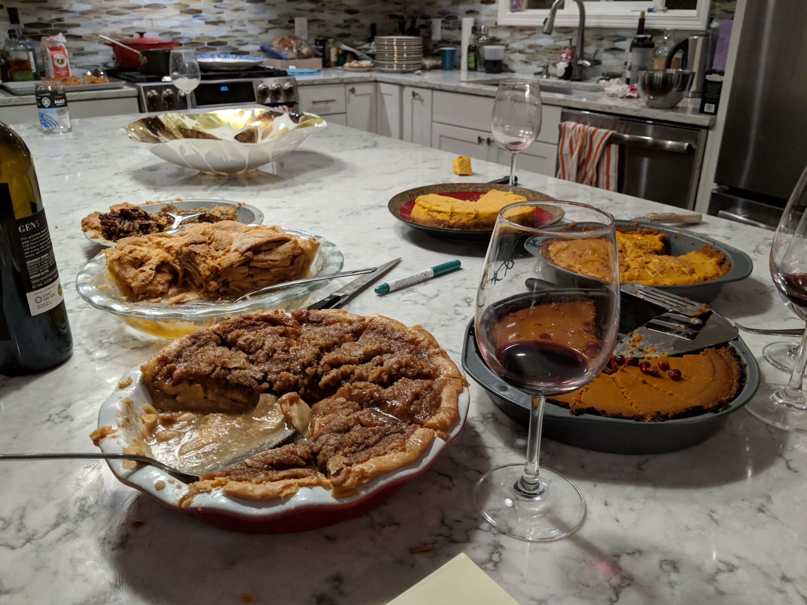
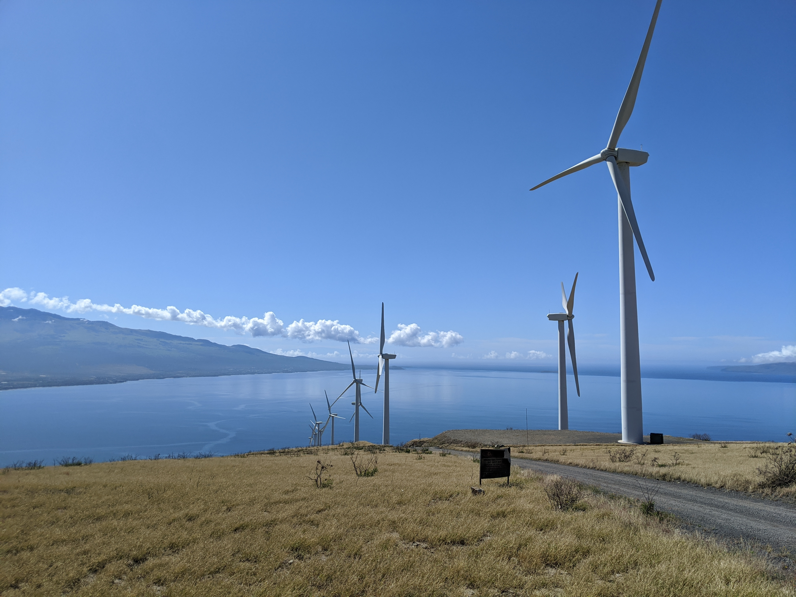
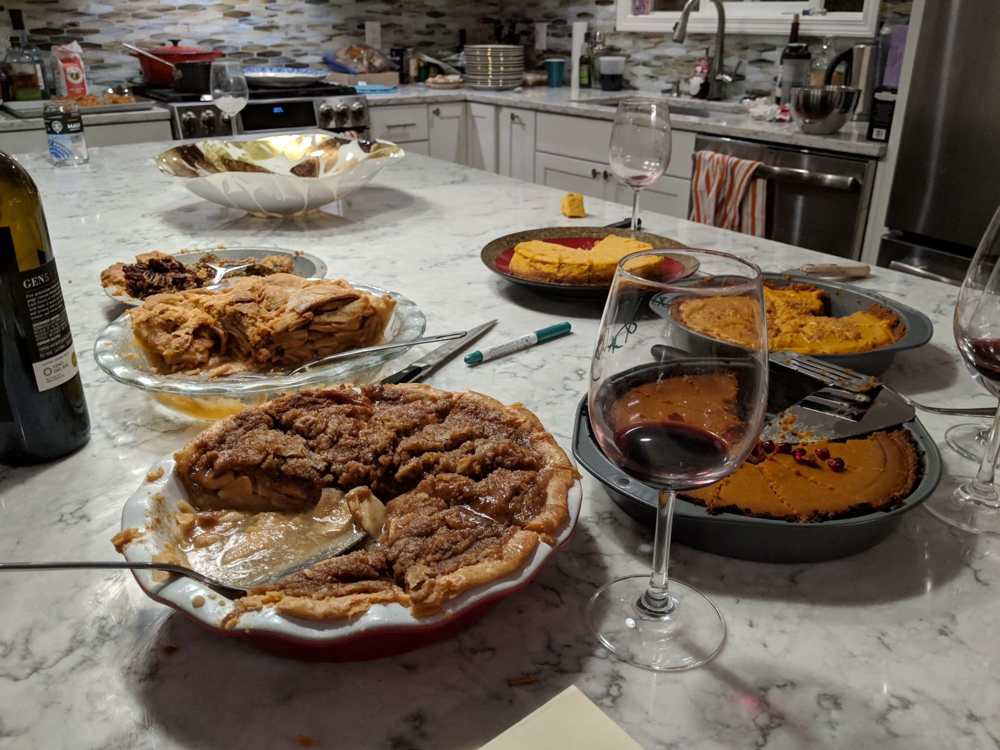
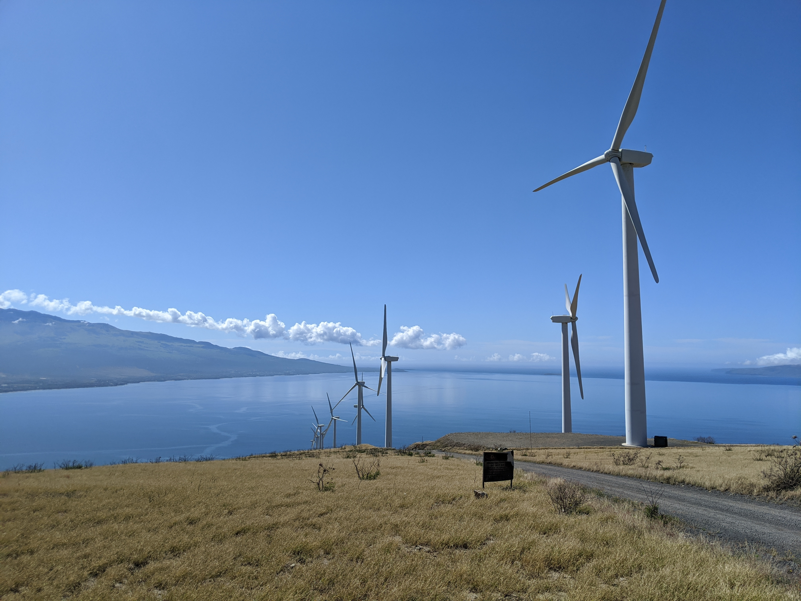
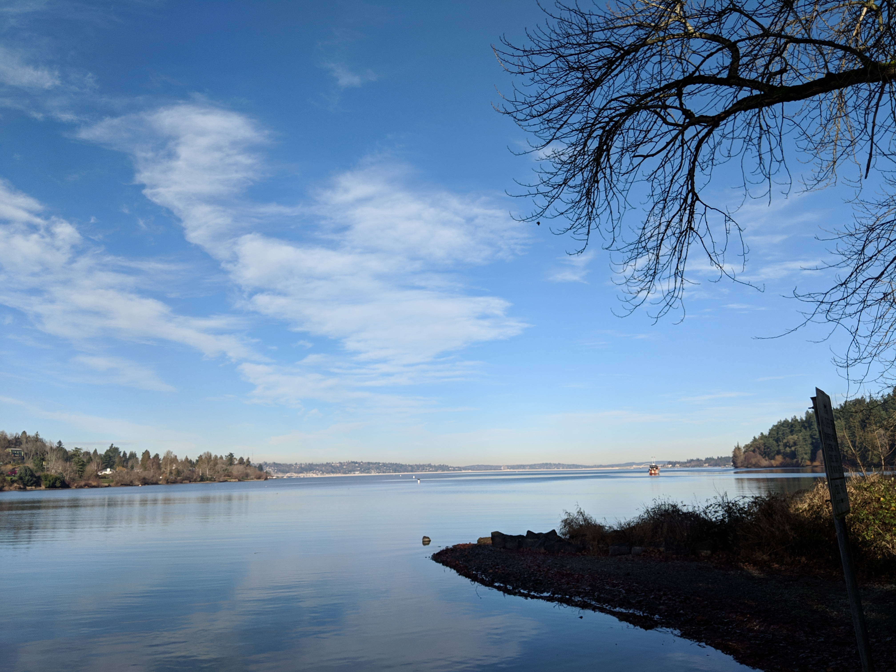
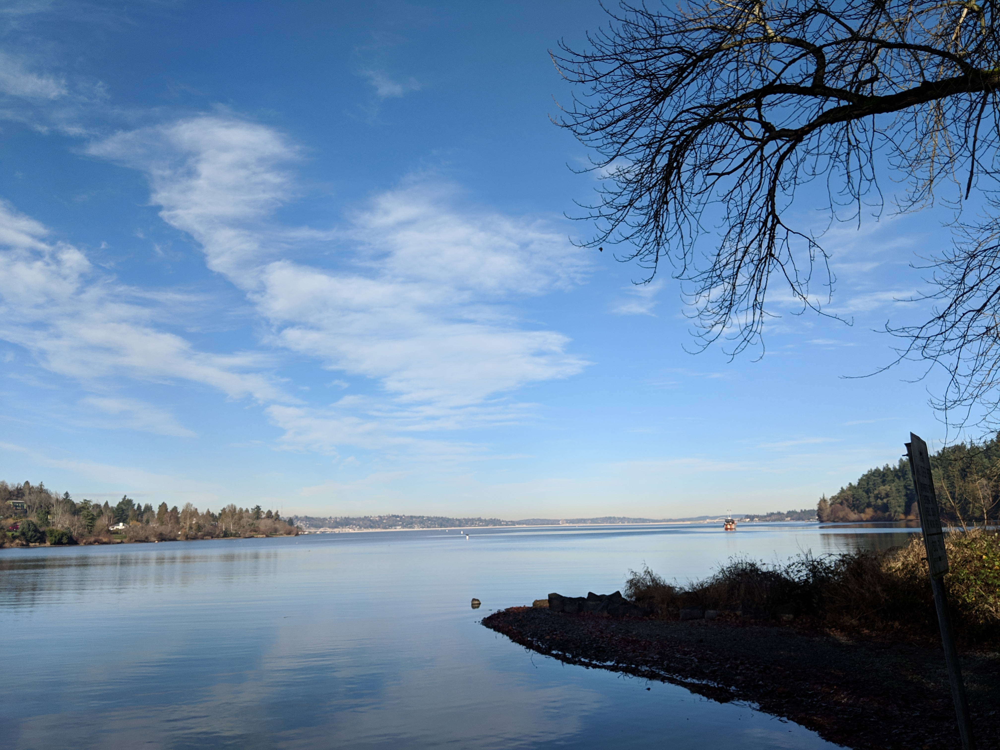

 

About Me
Hello, I’m Seth! I was born and raised in Portland, Oregon until I was 16, and then my family moved to Hawaii. I went to the University of Washington in Seattle for school and graduated in 2021 with my BSEE and a concentration in Power Electronics and Drives, and now I’m currently employed by General Motors in Detroit, Michigan as an Electric Drive Calibration Engineer in the GPD TRACK program!
When I moved to Hawaii, I joined my new high school’s FRC Robotics team, which exposed me to programming and circuitry for the first time. I was absolutely enthralled, leading me to take some engineering design classes that taught me CAD, and gave me some hands-on experience with Arduino projects. A couple years later, I made up my mind and decided that Electrical Engineering was the best way for me to chase after my passions.
When I got to college, I joined the Orsborn Lab, an ECE affiliated research lab at the university, where I currently volunteer. In the lab, I’m using MATLAB and Python to translate some legacy code for signal processing. I’m learning a lot about data analytics, which will be used to Brain-Computer Interface technologies. It’s cool stuff, and it’s helping me learn a lot about coding, academia, and teamwork. I further developed my python skills in the Renewable Energy Analysis Lab, working on simulating electric vehicle charging behaviors on a microgrid.
In my concentration, I took a year long capstone course that taught me the fundamentals of power electronics and controls through designing, programing, and fabricating an electric bike control PCB, to boost the battery voltage to feed to a 3 phase inverter to power the motor. Check out my project tab to learn more about that project! This project fueled my interest in EVs and electric drives, propelling me towards my current position at GM.
Currently, I'm looking to pursue a Masters related to power electronics and drives to give myself a stronger understanding of my work.
Outside of work, I like to read science fiction, play racquetball, go hiking, and keep up to date on global affairs. I used to be a competitive fencer; ask me about it if you’re interested!
Resumé
Projects
Course Highlights
Electric Drives (EE 453)
- Elements of drive systems, speed-torque characteristics of electric motors and industrial loads, solid-state converter. Starting and braking methods of loaded motors. Speed control of electric motors. Solid-state drives. Transient analysis of loaded motors. Special forms of individual- and multimotor drives.
Power Electronics Controls (EE 458)
- Theory, design, and analysis of closed-loop controllers for power electronics circuits. Emphasis will be placed on modern control methods using digital control.
Power Electronics Design (EE 452)
- Electronic conversion and control of electrical power. Includes semiconductor switching devices, power converter circuits, design of magnetics, and control of power converters. Also ac/ac, ac/dc, and dc/dc power converters; circuit simulation; extensive laboratory work; a four-week power converter design project.
Introduction to Embedded Processing (EE 474)
- Introduces the specification, design, development, and test of real time embedded system software. Use of a modern embedded microcomputer or microcontroller as a target environment for a series of laboratory projects and a comprehensive final project.
Advanced Technical Communications (EE 393)
- Practical skills for day-to-day engineering communication as well as an advanced exploration of how to prepare persuasive documents and presentations for technical and non-technical audiences.
Energy Systems (EE 351)
- Develops understanding of modern energy systems through theory and analysis of the system and its components. Discussions of generation, transmission, and utilization are complemented by environmental and energy resources topics as well as electromechanical conversion, power electronics, electric safety, renewable energy, and electricity blackouts.